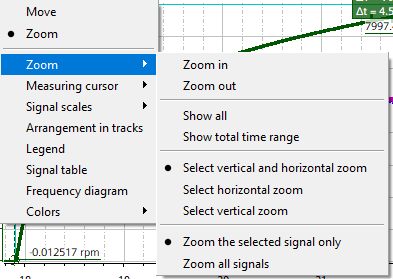

Menu items "Move" (drag the view) and "Zoom" in the main level of the context menu are mutually exclusive.
If "Move" is selected, the basis mouse cursor has the shape of a hand. Using the hand-shaped cursor, click on an empty background area and drag this with the left-hand mouse key pressed: Shift the whole trace diagram, in the drag direction.
If "Zoom" is selected, the basis mouse cursor is an arrow. Press the left mouse key on an empty background area and drag with the left mouse key pressed: Draw a "rectangle". When the mouse key is released, the diagram will be zoomed in to the area enclosed by the "rectangle".
In both the "Move" and "Zoom" modes: Using the hand-shaped cursor, click on a signal line and drag this with the left mouse key pressed: Individually move the signal line. The other signals are not shifted and the active signal is not changed.
The "Zoom" submenu contains the following commands:
Zoom in or out (same effect as the <CTRL++> and <CTRL+-> key combinations).
Show all (same effect as the <CTRL+0> key combination).
Show total time range:
Zoom the diagram horizontally so that the entire measurement time range is visible, without changing the vertical visible range. This is the same as selecting "Select horizontal zoom" and then the "Show all signals" options.
Zoom direction:
The three options horizontal, vertical or both are mutually exclusive. Zoom actions only operate in the selected direction. Just the same as using the zoom direction symbols in the toolbar.
If horizontal zoom is selected, then the "Zoom the selected signal only" option is automatically disabled, since the horizontal axis is common for all signals.
Zoom only the selected signal (the selected signal group) or zoom all signals:
These two options are mutually exclusive. All zoom actions only influence the selected signal (the selected signal group) or influence all signals.